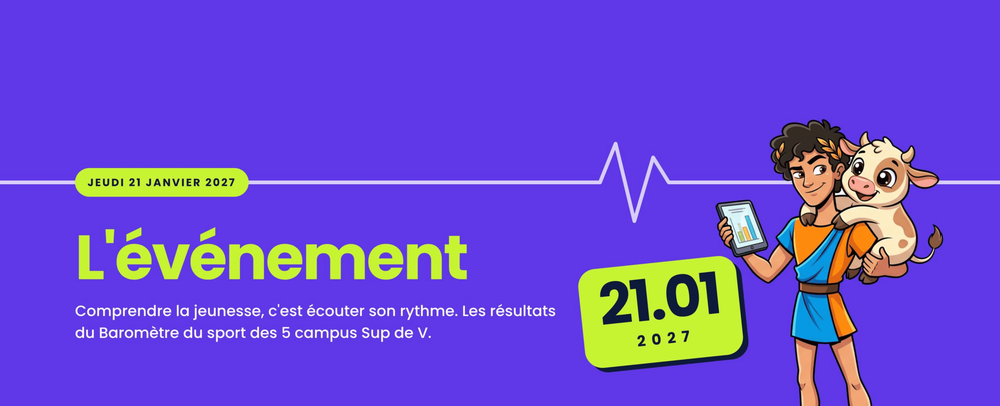
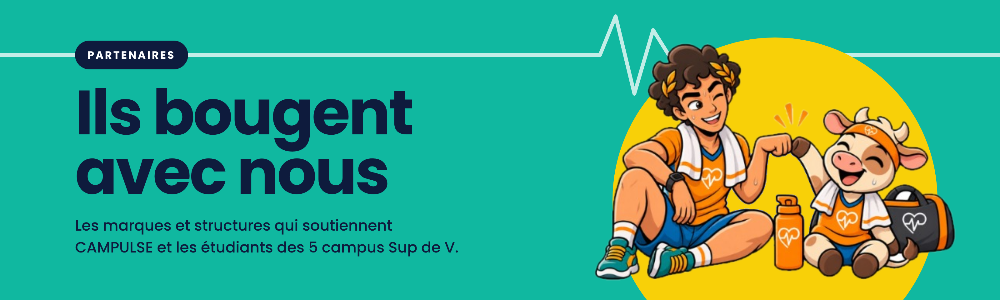
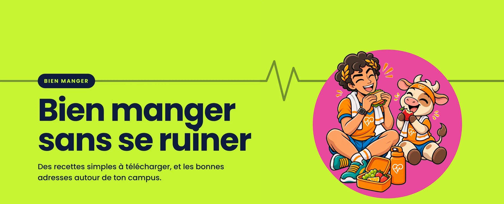
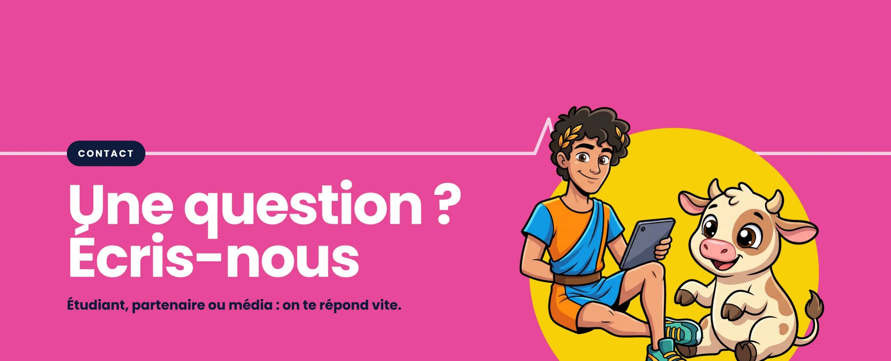

Je découvre mon profil
Réponds au Baromètre du sport : 5 minutes, et tu reçois ton profil Kilo ou Milo.
Plus on est nombreux, plus les résultats disent quelque chose de vrai sur notre génération.
Je réponds au Baromètre5 minutes pour dire comment tu bouges vraiment. Tes réponses seront dévoilées le 21 janvier 2027.

Réponds au questionnaire : anonyme, 5 minutes, et à la fin tu reçois un mail qui te dit quelle mascotte tu es.

Pas besoin d'être sportif pour en être.
Réponds au Baromètre du sport : 5 minutes, et tu reçois ton profil Kilo ou Milo.
Plus on est nombreux, plus les résultats disent quelque chose de vrai sur notre génération.
Je réponds au BaromètreLa révélation des résultats des 5 campus devant des médias du sport, l'échauffement collectif en amphi, la marelle géante, le Challenge StepUp en direct.
Une journée pour bouger ensemble, pas pour écouter assis.
Le 12h PULSE arrive dans ta boîte mail : un conseil santé, sport ou alimentation par semaine.
Pas de blabla, du concret.
Je m'inscris486 000 licenciés, 7 900 animateurs, une conviction : le sport comme moteur de vitalité, pas de performance. La FFSV est partenaire de CAMPULSE et porte la parole des étudiants au-delà des 5 campus.
Découvrir la FFSVLa Fédération Française de Sport Vitalité nous accompagne déjà.
CAMPULSE, c'est une étude inédite sur la pratique sportive des étudiants de 5 campus d'Île-de-France, une journée événement, et une présence toute l'année dans leur boîte mail.
Associez votre nom à une génération qu'on écoute vraiment.
Tu es plutôt Kilo ou Milo ?Après ta réponse, un mail te révèle ta mascotte.

Les chiffres clés du Baromètre seront présentés le jour J. Tu pourras ensuite télécharger le PDF complet ici.
On finalise le programme des animations. En attendant, fais entendre ta voix dans le Baromètre.
Je réponds au questionnaire4 univers, pour tous les profils, sportifs ou non. On alterne effort, détente, jeu et conseils du quotidien.
Une appli gratuite qui compte tes pas. Tu rejoins l'équipe de ton campus et tu marches à ton rythme. Aucun niveau requis.
Le seul challenge avec quelque chose à gagner. Lots offerts par nos partenaires.
Lots à définir avec Animation et ProspectionChaque mercredi à 12h, avec le 12h PULSE.
On finalise la liste de nos partenaires. Envie de soutenir CAMPULSE ? Écris-nous.
Nous contacter
Les marques et structures qui soutiennent CAMPULSE et les étudiants des 5 campus Sup de V.
Offerts par nos partenaires au campus qui fera le plus de pas.
Lots à définirGagnez en visibilité auprès des étudiants de Paris, Pontoise, Enghien-les-Bains, Rambouillet et Saint-Germain-en-Laye.
Nous contacter
Temps à pied estimés à partir de la distance à vol d'oiseau : compte 1 à 3 minutes de plus. Indicateur de prix Google (€ très bon marché, €€ prix moyen). Les prix cités viennent d'avis clients et les horaires de Google Maps (novembre 2026) : ils peuvent changer, vérifie avant d'y aller.

Chaque mercredi à 12h, un conseil sport, santé ou alimentation pensé pour ton profil Kilo ou Milo. Ça se lit en 2 minutes, le temps d'une pause, et ça t'aide à mieux vivre ta semaine.
Deux versions selon ton profil, choisies automatiquement à partir de tes réponses au Baromètre.
Bonne nouvelle : toutes les légendes commencent comme toi.
Lire la version Kilo →Alors tu as un point commun avec un champion olympique d'il y a 2 500 ans.
Lire la version Milo →
Clique sur « Je participe » : c'est un questionnaire anonyme de 5 minutes, ouvert jusqu'au 11 janvier.
Nos deux mascottes. Après le questionnaire, un mail te dit laquelle te ressemble.
Télécharge l'appli gratuite, rejoins l'équipe de ton campus et marche du 11/01 au 04/02.
Inscris-toi sur la page 12h PULSE : un mail chaque mercredi à 12h.
SUP de V — École Supérieure de Vente et de Management
CCI Paris Île-de-France Éducation
3 rue Armand Moisant, 75015 Paris
SIREN : 889 307 971
Contact : mmdc2paris@gmail.com
CAMPULSE est un projet pédagogique réalisé par les étudiants du Master 2 Marketing Digital, Communication et Événementiel (promotion MMDC2).
[À REMPLIR - nom et fonction]
Vercel Inc.
440 North Barranca Avenue, Suite 4133
Covina, CA 91723, États-Unis
vercel.com
L'ensemble des contenus de ce site (textes, visuels, logo et nom CAMPULSE) est protégé par le droit de la propriété intellectuelle. Toute reproduction, représentation ou diffusion, totale ou partielle, sans autorisation préalable est interdite.
Les logos et marques des partenaires restent la propriété de leurs détenteurs respectifs.
Les données saisies dans le formulaire de contact (nom, e-mail, statut, message) sont collectées uniquement pour répondre à ta demande. Elles sont transmises par e-mail à mmdc2paris@gmail.com, conservées 12 mois maximum, et ne sont jamais revendues ni transmises à des tiers.
Les données saisies pour l'inscription au 12h PULSE (prénom, e-mail, campus) sont enregistrées dans un tableur Google Sheets accessible uniquement à l'équipe CAMPULSE, et servent seulement à t'envoyer la newsletter. Ton e-mail est aussi comparé aux réponses du Baromètre pour te proposer le questionnaire si tu n'y as pas encore répondu. Ces données sont conservées jusqu'à ta désinscription, et au plus tard jusqu'en juin 2027, à la fin du projet.
Base légale : ton consentement, donné en cochant la case du formulaire.
Conformément au Règlement général sur la protection des données (RGPD) et à la loi Informatique et Libertés, tu disposes des droits suivants sur tes données :
Pour exercer ces droits, écris à mmdc2paris@gmail.com. Si tu estimes que tes droits ne sont pas respectés, tu peux adresser une réclamation à la CNIL (cnil.fr).
Ce site ne dépose aucun cookie et n'utilise aucun outil de mesure d'audience ni de publicité.
Pour fonctionner, il fait appel à des services de Google : les polices d'écriture (Google Fonts), ainsi que le compteur de réponses et l'archive des newsletters (Google Apps Script). Ton navigateur leur transmet donc ton adresse IP lors du chargement de la page.
Les liens vers des sites externes (questionnaire Google Forms, Instagram, LinkedIn, Google Maps…) n'envoient rien tant que tu ne cliques pas. Une fois sur ces sites, leurs propres politiques de confidentialité s'appliquent.
Les informations publiées sur ce site sont fournies à titre indicatif et font l'objet d'une attention particulière. Elles peuvent toutefois contenir des erreurs ou être modifiées sans préavis ; l'éditeur ne saurait être tenu responsable de leur inexactitude ni de l'usage qui en est fait.
Le site contient des liens vers des sites tiers. L'éditeur n'exerce aucun contrôle sur leur contenu et décline toute responsabilité à leur égard.
Les présentes mentions légales sont soumises au droit français. En cas de litige, et à défaut de résolution amiable, les tribunaux français sont seuls compétents.